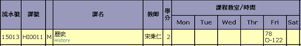

當你進入選課列表時,所看到的資料如下圖所示。
| 1 | 流水號 | 提供直接加選的課程流水號。 |
| 2 | 課號 | 最前方的英文代表開這門課的單位。 |
| 3 | 課程教室/時間 | 該欄介紹上課的時間與地點。以此圖例來說，只有「Fri」那一行有「78 O-122」，代表該門課只有禮拜五的7、8節上課，上課地點在O-122。O代表綜教館，其他館代號可以見附錄。122代表房間代碼，百位數的1代表該教室在一樓。 |
在想選的課程前端的空格選取後，點選最底下的「加選」，就能加選該課並在「狀態與說明」、「課表」內看到該門課。該課程應處於未分發的狀態，9/3將會公佈第二次初選分發結果。

附錄:
| A 文學館大樓 | L 圖書館大樓(舊圖書館) |
| C2 文學二館大樓 | L3 國鼎圖書資料館 |
| E 工程館大樓 | M 鴻經館大樓 |
| E1 電機館大樓 | O 綜合教學大樓 |
| E2 機械館大樓 | R2 遙測中心 |
| E3 環工化工館大樓 | R3 二期館 |
| E4 機電實驗室 | S 科學館大樓 |
| E5 大型力學實驗室 | S1 科學二館大樓 |
| E6 工程五館大樓 | S2 科學三館大樓 |
| H 生命科學館(舊實習工廠) | S4 科學四館大樓 |
| I 志希館大樓 | S5 科學五館大樓 | I1 管理二館 |